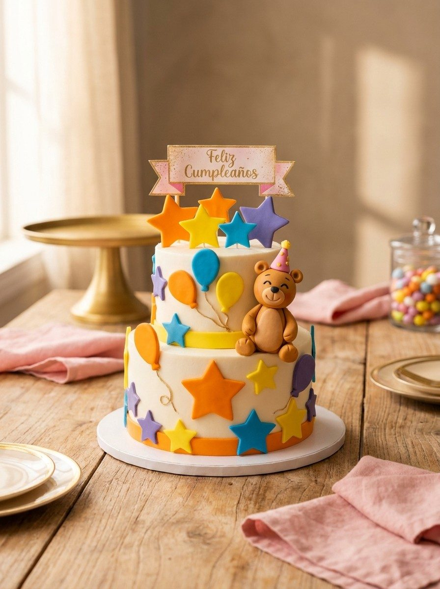
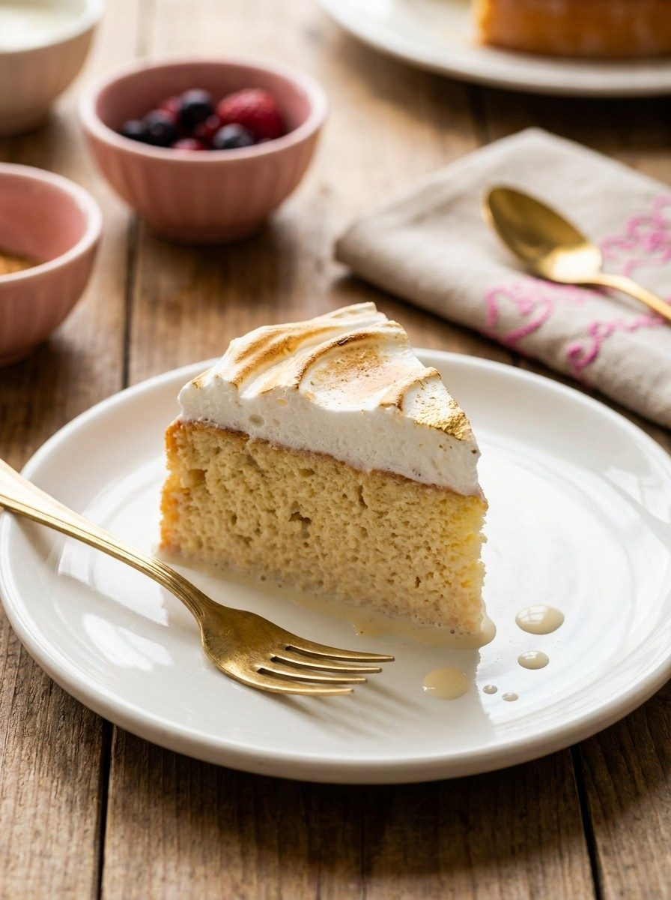

Cumpleaños
Desde la tarta del primer añito hasta la sorpresa temática que pida el peque. Con figuras, colores y el nombre en grande.
Obrador artesanal en Ourense
Tú imaginas, nosotros lo hacemos.




Baja para verlas
18 reseñas en Google
Los 7 días
Abrimos también domingos
Junto al Posío
Rúa do Progreso 27
Para cada celebración
Nos cuentas la idea, la fecha y para cuántas personas. Nosotras la dibujamos, te pasamos precio y la tienes lista el día que la necesitas.
Desde la tarta del primer añito hasta la sorpresa temática que pida el peque. Con figuras, colores y el nombre en grande.
Tartas de varios pisos, mesa de dulces y detalles para los invitados. Probamos sabores contigo antes de decidir.
Comuniones, bautizos, baby showers, jubilaciones y celebraciones de empresa. Nos adaptamos al número de comensales.
Su videojuego, su serie o su equipo favorito. Si te lo imaginas, lo llevamos a la tarta.
Lo que nos hace distintas
Somos una pastelería venezolana, y eso se nota en el mostrador. Junto a las tartas de encargo hacemos los dulces de casa con la receta de siempre: bizcocho calado en sus tres leches, golfeados recién hechos y las piñitas que tanto nos piden.
No hace falta que nos creas. Es lo que más repiten nuestros clientes en Google.
«Ayer fuimos a probar la tarta 3 leches, porque queríamos una de verdad, tipo venezolano, y hemos encontrado el lugar 😍»
Esponjosa, jugosa y nada empalagosa. Por porción en el mostrador o entera por encargo.
El clásico venezolano de papelón y queso blanco. Recién hechos, para llevar calentitos.
Dulce de hojaldre relleno, de los que desaparecen antes de llegar a casa.
Gruesas, con el centro tierno. «Si las pruebas ya no querrás otras», dice una clienta.
Nuestro trabajo
Cada una salió de una idea que alguien nos contó por WhatsApp. Puedes ver muchas más en nuestro Instagram.
El obrador
Donde sale todo cada mañana
Opiniones
0
reseñas en Google, con una media de 4,9 sobre 5
Ver las reseñas en GoogleAquí no ponemos frases nuestras en boca de nadie: son las reseñas tal cual las escribieron. Las que Google recorta salen recortadas, con enlace para leerlas enteras.
Pasa el ratón por encima para pararlas · pulsaToca una tarjeta para abrir su ficha en Google
Cómo encargar
Sin formularios largos ni registros. Nos escribes, lo hablamos y vienes a recogerla.
Por WhatsApp al 656 584 027. Dinos la fecha, para cuántas personas y qué te imaginas. Si tienes una foto de referencia, mándala: ayuda muchísimo.
Te confirmamos si llegamos a tu fecha y cuánto cuesta, con el sabor y el tamaño ya cerrados. Sin compromiso hasta que nos digas que sí.
El día acordado la tienes en la tienda, en su caja y preparada para transportar. Puntuales, que es lo que más nos agradecen.
Lo habitual es avisar con al menos 72 horas. Para bodas o diseños con figuras modeladas, mejor una o dos semanas. Escríbenos y te confirmamos si llegamos a tu fecha.
El postre venezolano más conocido: bizcocho esponjoso calado en tres leches y cubierto de merengue. Lo hacemos con la receta de casa, y es lo que más nos piden repetir.
Cuéntanos la intolerancia al hacer el encargo y te decimos con franqueza qué podemos adaptar. Trabajamos en un obrador pequeño donde se manipulan gluten, huevo, lácteos y frutos secos, así que no podemos garantizar ausencia total de trazas.
En Rúa do Progreso 27, bajo 3, junto al Jardín do Posío. Abrimos los siete días y no hace falta cita: pásate a ver las tartas expuestas.
Dónde estamos
Comprobando horario…
| Lunes | 10:00 – 20:00 |
|---|---|
| Martes | 10:00 – 20:00 |
| Miércoles | 11:00 – 22:00 |
| Jueves | 11:00 – 22:00 |
| Viernes | 11:00 – 22:00 |
| Sábado | 11:00 – 22:00 |
| Domingo | 10:00 – 22:00 |
Estamos en el Jardín do Posío
Rúa do Progreso 27, bajo 3 · 32005 Ourense
Ver el mapa en Google MapsEl mapa incrustado no se ha podido cargar aquí.